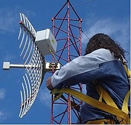
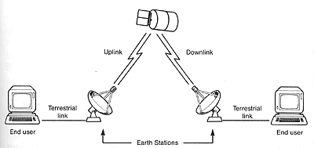

Las señales de microondas solo viajan en línea recta, son ondas unidireccionales (el emisor y el receptor deben de estar completamente alineados), estas señales no pueden atravesar objetos, ya que la curvatura de la tierra no permite la correcta alineación del emisor y el receptor, por lo que, la distancia entre los repetidores no debe de ser mayor a 80 km.
Frecuencia: Mayor a 1 GHz.
Longitud de onda: menor a 30 cm.
TERRESTRES
Usan antenas parabólicas, conexiones de larga distancia, usan conexiones intermedias punto a punto entre antenas parabólicas. Se usan para sustituir el cable coaxial o fibras ópticas porque ocupan menos repetidores y amplificadores.
Frecuencia alta: Entre 1 y 300 GHz.
Ventajas
o Alternativa poco costosa para lugares donde no se pueden instalar cables para largas distancias.
o Transmisión de televisión y voz.
Desventajas
o Poco práctico para velocidades altas.
o Caro para instalar y dar mantenimiento.
o Interferencias por el mal clima, condiciones atmosféricas y electromagnéticas.
o Rebotan en metales.
o Algunas unidireccionales.
SATELITALES
Lo que hacen es retransferir información, es el enlace entre dos o más transmisores/receptores terrestres (estaciones base), es un espejo donde la señal rebota para amplificar la señal, corregirla, retransmitirla.
Ventajas
o Comunicación sin cables.
o Grandes coberturas: Países, continentes, etc.
o Banda ancha.
o Independiente de estructura de comunicaciones en la Tierra.
o Instalación rápida.
o Nada costoso agregar un nuevo receptor.
o Servicio uniforme.
Desventajas
o Demora en la propagación.
o Interferencia de radio y microondas
o Señales débiles por fenómenos meteorológicos (lluvias, nieve, manchas solares, etc.).